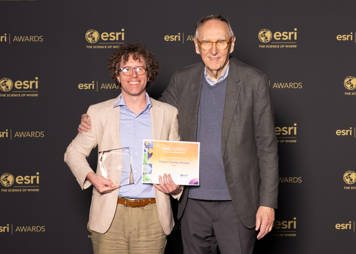

Curriculum Vitae
Chandler S. White IV, GISP
GIS Technical Coordinator | Clayton County, Georgia
Geographic information science professional with expertise in research, spatial analysis, and modern GIS platforms
Education
M.S., Geospatial Science
University of North Alabama, Florence, AL
December 2017
Thesis: Phylogenetic patterns of invasive macrophytes in freshwater communities
Advisor: Dr. Jonathan Fleming
Advisor: Dr. Jonathan Fleming
B.A., Geography
Auburn University, Auburn, AL
December 2009
Professional Experience
GIS Technical Coordinator
Clayton County Department of Information Technology
January 2024 - Present
GIS Analyst
Clayton County Department of Information Technology
June 2023 - January 2024
Systems Administrator
Clayton County Department of Transportation and Development
October 2018 - June 2023
Graduate Teaching Assistant
University of North Alabama
January 2016 - December 2017
Courses: Quantitative Methods, GIS, Physical Geography, Cartography, Remote Sensing
Research Experience
Research Assistant
AlabamaView
2008 - 2010
Collected and processed environmental products derived from Landsat program platforms
Research Volunteer
Lake Watch of Lake Martin
2009 - 2010
Collected and processed water samples using spectroradiometer and other digital sensors for eutrophication analysis
Technical Skills & Expertise
GIS & Spatial Analysis
- Esri (ArcGIS Enterprise, Online, Pro)
- QGIS
- Remote sensing & image analysis
- Web GIS
- Python
- R
Spatial Modeling
- MaxEnt
- ClimateNA
- TerrSet
- Suitability analyses (site selection, ecological niche)
- Model validation & evaluation
Data & Systems
- Database administration
- Enterprise GIS systems
- ETL design
- System integration
- Geospatial app development
Research Areas
- Community ecology
- Lentic ecosystems
- Transportation
- GIS Governance
- Quantitative and qualitative methods
- Physical and cultural geography
Professional Certifications
Geographic Information Systems Professional (GISP)
GIS Certification Institute | Credential ID 161424 | Awarded 2022
GIS Certification Institute | Credential ID 161424 | Awarded 2022
Selected Awards & Recognition
Special Achievement in GIS Award
Esri
2025

2025 Esri UC Awards Ceremony; Chandler White, Jack Dangermond (Esri cofounder and president; left-to-right)
Government-to-Government Award
Government Management Information Sciences, Georgia Chapter
2025
David W. Icenogle Award for Outstanding Senior in Geography
Auburn University
2009
Professional Development & Service
GIS Track Organizer
May 2025
Designed and served as instructor of record for a series of six GIS workshops at the Spring 2025 Georgia GMIS Conference.
GIS Day Workshop Organizer
Morrow High School
November 2024
Organized and led GIS Day Expo event and GIS mini-workshop for students
Humanitarian Mapping Volunteer
February 2023
Contributed 42.1 hours to earthquake response efforts in Türkiye and Syria, performing feature extraction from satellite imagery